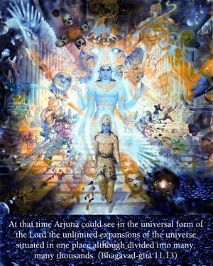
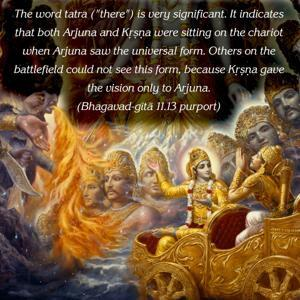

At that time Arjuna could see in the universal form of the Lord the unlimited expansions of the universe situated in one place although divided into many, many thousands.


The word tatra (“there”) is very significant. It indicates that both Arjuna and Kṛṣṇa were sitting on the chariot when Arjuna saw the universal form. Others on the battlefield could not see this form, because Kṛṣṇa gave the vision only to Arjuna. Arjuna could see in the body of Kṛṣṇa many thousands of planets. As we learn from Vedic scriptures, there are many universes and many planets. Some of them are made of earth, some are made of gold, some are made of jewels, some are very great, some are not so great, etc. Sitting on his chariot, Arjuna could see all these. But no one could understand what was going on between Arjuna and Kṛṣṇa.